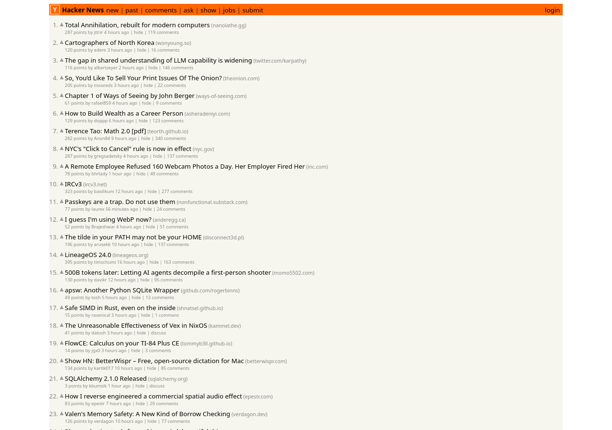
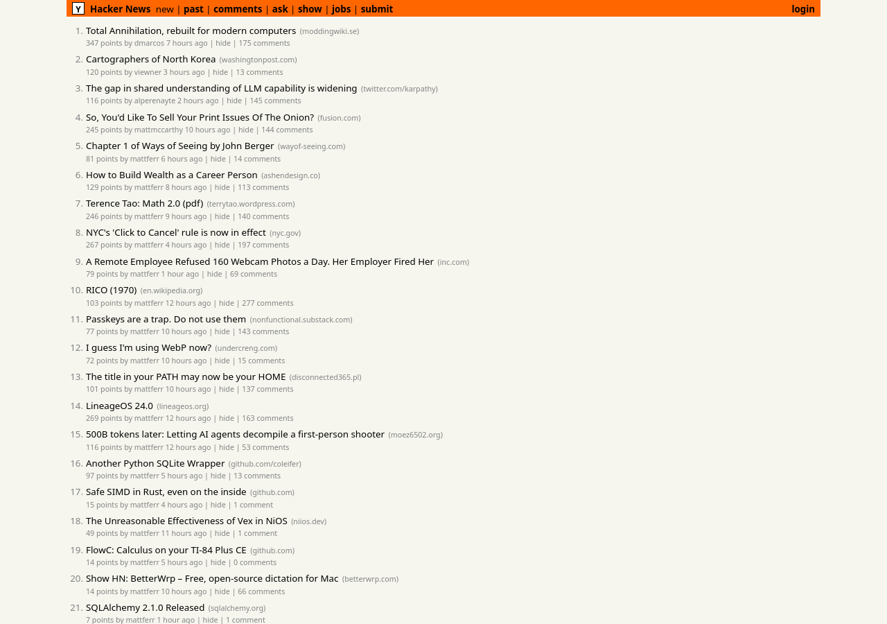
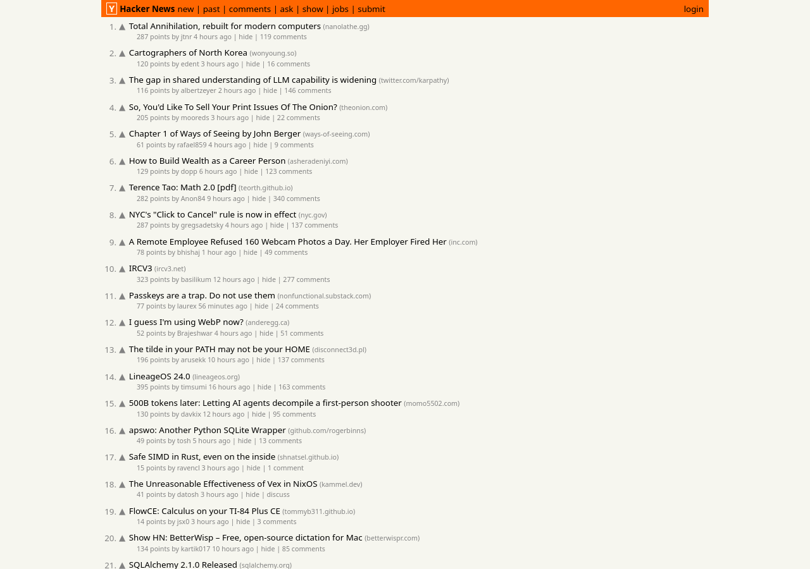

Vision mode: a screenshot rebuilt as a single HTML file
Image encoder on the CPU (6 threads), answer rendered in Firefox

Screenshot sent to the model
Hacker News front page, 1280 × 900
Rebuilt with 300 image tokens
CPU encoding 2.7 s · 4,593 tokens at 148.9 tok/s · small text made up
Rebuilt with 1,024 image tokens
CPU encoding 13.3 s · 5,284 tokens at 147.6 tok/s · text almost exactThe HTML produced and the statistics are in bench/vision/run1/.